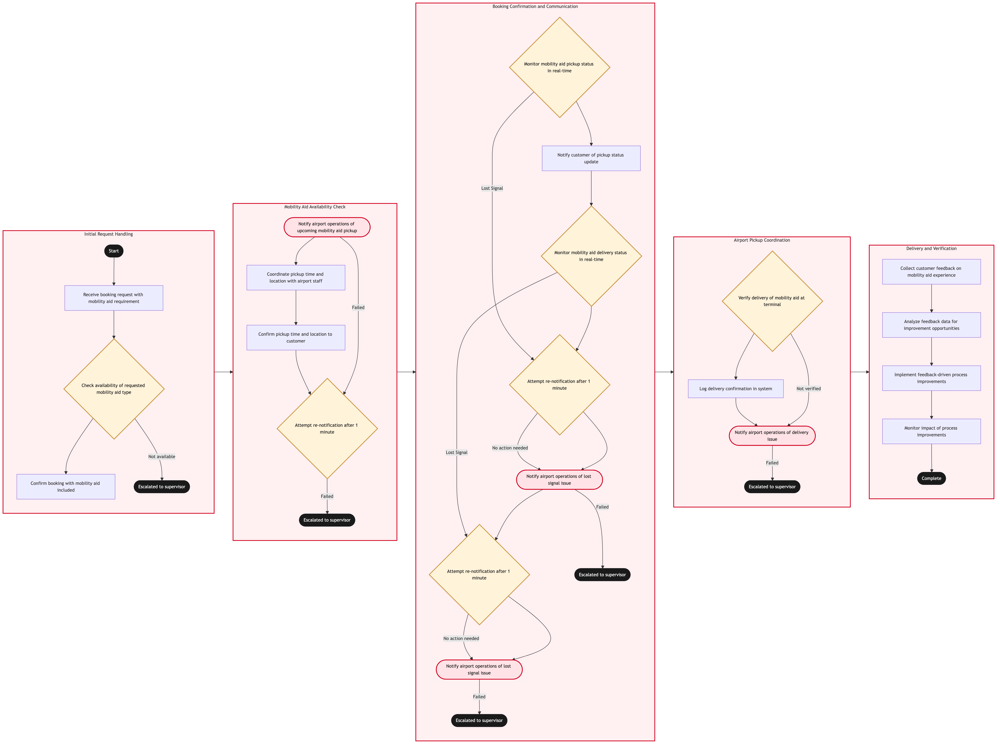

Updated 2026-08-20
Mobility Aid Handling and Tracking
Process flow
Click to zoom

Process steps
▼
Phase 1 — Initial Request Handling
3 steps
| Step | Activity | Role | System | Input | Output | KPI | Dec | Exc | Pain point |
|---|---|---|---|---|---|---|---|---|---|
| 1.1 | Receive booking request with mobility aid requirement | Customer Service Agent | aircanada.comA | Customer booking details | Booking confirmation with mobility aid included | 95% booking accuracy within 2 minutes | N | N | System latency can cause delays in processing bookings. |
| 1.2 | Check availability of requested mobility aid type | Special Services Coordinator | Air Canada Mobile AppA | Mobility aid request details | Availability status of the mobility aid | 90% accuracy in stock check within 1 minute | Y | N | Inventory discrepancies due to manual data entry errors. |
| 1.3 | Confirm booking with mobility aid included | Customer Service Agent | aircanada.comA | Booking confirmation with mobility aid details | Confirmed booking details sent to customer | 85% satisfaction rate in communication | N | N | Customer service agents may lack training on detailed mobility aid descriptions. |
▼
Phase 2 — Mobility Aid Availability Check
4 steps
| Step | Activity | Role | System | Input | Output | KPI | Dec | Exc | Pain point |
|---|---|---|---|---|---|---|---|---|---|
| 2.1 | Notify airport operations of upcoming mobility aid pickup | Special Services Coordinator | Amazon ConnectA | Airport code and pickup details | Confirmation from airport operations | 98% successful notifications within 5 minutes | N | Y | Network issues can disrupt communication with airport systems. |
| 2.2 | Coordinate pickup time and location with airport staff | YYZ Operations Control Duty Manager | Salesforce Service CloudA | Airport operations confirmation | Pickup schedule details | 95% coordination accuracy within 10 minutes | N | N | Scheduling conflicts with other airport operations. |
| 2.3 | Confirm pickup time and location to customer | Customer Service Agent | Air Canada Mobile AppA | Pickup schedule details | Confirmation sent to customer | 90% satisfaction rate in communication | N | N | Customers may misinterpret pickup times due to timezone differences. |
| 2.4 | Attempt re-notification after 1 minute | Special Services Coordinator | Amazon ConnectA | Airport code and pickup details | Confirmation from airport operations | 98% successful notifications within 5 minutes | Y | N | Network issues can disrupt communication with airport systems. |
▼
Phase 3 — Booking Confirmation and Communication
7 steps
| Step | Activity | Role | System | Input | Output | KPI | Dec | Exc | Pain point |
|---|---|---|---|---|---|---|---|---|---|
| 3.1 | Monitor mobility aid pickup status in real-time | Special Services Coordinator | Air Canada Mobile AppA | Live tracking data | Pickup status updates | 95% accuracy in real-time tracking within 1 minute | Y | N | GPS signal loss can cause tracking inaccuracies. |
| 3.2 | Notify customer of pickup status update | Customer Service Agent | Air Canada Mobile AppA | Pickup status updates | Status update sent to customer | 90% satisfaction rate in communication | N | N | Customers may misinterpret pickup times due to timezone differences. |
| 3.3 | Monitor mobility aid delivery status in real-time | Special Services Coordinator | Air Canada Mobile AppA | Live tracking data | Delivery status updates | 95% accuracy in real-time tracking within 1 minute | Y | N | GPS signal loss can cause tracking inaccuracies. |
| 3.4 | Attempt re-notification after 1 minute | Special Services Coordinator | Air Canada Mobile AppA | Pickup status updates | Status update sent to customer | 90% satisfaction rate in communication | Y | N | Customers may misinterpret pickup times due to timezone differences. |
| 3.5 | Notify airport operations of lost signal issue | Special Services Coordinator | Amazon ConnectA | Airport code and pickup details | Confirmation from airport operations | 98% successful notifications within 5 minutes | N | Y | Network issues can disrupt communication with airport systems. |
| 3.6 | Attempt re-notification after 1 minute | Special Services Coordinator | Air Canada Mobile AppA | Delivery status updates | Status update sent to customer | 90% satisfaction rate in communication | Y | N | Customers may misinterpret pickup times due to timezone differences. |
| 3.7 | Notify airport operations of lost signal issue | Special Services Coordinator | Amazon ConnectA | Airport code and pickup details | Confirmation from airport operations | 98% successful notifications within 5 minutes | N | Y | Network issues can disrupt communication with airport systems. |
▼
Phase 4 — Airport Pickup Coordination
3 steps
| Step | Activity | Role | System | Input | Output | KPI | Dec | Exc | Pain point |
|---|---|---|---|---|---|---|---|---|---|
| 4.1 | Verify delivery of mobility aid at terminal | Special Services Coordinator | Air Canada Mobile AppA | Customer confirmation | Delivery verification status | 95% accuracy in verification within 2 minutes | Y | N | Customers may not be aware of the verification process. |
| 4.2 | Log delivery confirmation in system | Special Services Coordinator | Salesforce Service CloudA | Delivery verification status | Updated case record | 90% accuracy in logging within 1 minute | N | N | Data entry errors can lead to inaccurate records. |
| 4.3 | Notify airport operations of delivery issue | Special Services Coordinator | Amazon ConnectA | Airport code and pickup details | Confirmation from airport operations | 98% successful notifications within 5 minutes | N | Y | Network issues can disrupt communication with airport systems. |
▼
Phase 5 — Delivery and Verification
4 steps
| Step | Activity | Role | System | Input | Output | KPI | Dec | Exc | Pain point |
|---|---|---|---|---|---|---|---|---|---|
| 5.1 | Collect customer feedback on mobility aid experience | Customer Service Agent | aircanada.comA | Post-travel survey | Feedback data | 90% response rate within 24 hours | N | N | Low customer engagement with post-travel surveys. |
| 5.2 | Analyze feedback data for improvement opportunities | Special Services Analyst | Salesforce Service CloudA | Feedback data | Improvement recommendations | 85% actionable insights within 48 hours | N | N | Complex analysis can lead to delayed improvements. |
| 5.3 | Implement feedback-driven process improvements | Special Services Manager | Air Canada Mobile AppA | Improvement recommendations | Updated process guidelines | 90% implementation rate within 1 week | N | N | Resistance to change from operational staff. |
| 5.4 | Monitor impact of process improvements | Special Services Analyst | Salesforce Service CloudA | Process performance data | Impact analysis report | 80% improvement in customer satisfaction within 2 weeks | N | N | Lack of clear metrics for impact assessment. |
Swim lanes
Customer Service Agent1.1 1.3 2.3 3.2 5.1
Special Services Coordinator1.2 2.1 2.4 3.1 3.3 3.4 3.5 3.6 3.7 4.1 4.2 4.3
YYZ Operations Control Duty Manager2.2
Special Services Analyst5.2 5.4
Special Services Manager5.3
Systems touched
aircanada.comAAir Canada Mobile AppAAmazon ConnectASalesforce Service CloudA
Key performance indicators
- 95% booking accuracy within 2 minutes
- 90% accuracy in stock check within 1 minute
- 85% satisfaction rate in communication
- 98% successful notifications within 5 minutes
- 95% coordination accuracy within 10 minutes
Risks and control points
- Network disruptions affecting real-time tracking and communication.
- Data entry errors leading to inventory discrepancies or inaccurate records.
- Customer misinterpretation of pickup times due to timezone differences.
- Low customer engagement with post-travel surveys.
- Resistance to change from operational staff impacting process improvements.
Air Canada Process Wiki — process and systems reference compiled from public sources
for IT Application Management and User Support pre-sales discovery.
Built 2026-08-20. Every system carries an evidence tier: tier C is an industry pattern and tier U is an open
question, and neither should be asserted as fact about Air Canada without confirmation in discovery.
Not affiliated with or endorsed by Air Canada. Air Canada, Aeroplan and Altitude are trademarks of Air Canada.